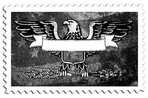
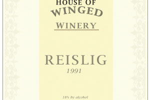
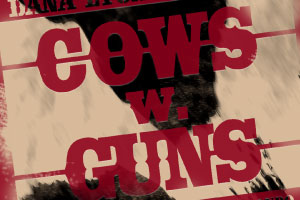
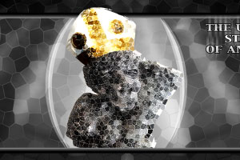

PROBLEM A

Flag, created in Illustrator
Michigan State University STA 360
Instructed by Joe Kuszai
A problem that required me to carefully research the island of Nevis in order to create a succesful flag represnting the island.
PROBLEM B
Stamp Collection, created in Photshop and Illustrator
Michigan State University STA 360
Instructed by Joe Kuszai
Two collections of stamps: one featuring Nathan Hale and another featuring William Gillette.
PROBLEM C
Labels, created in Photoshop and Illustrator
Michigan State University STA 360
Instructed by Joe Kuszai
Creation of two wine labels based on two of the following art movements: surrealism and baroque.
PROBLEM D
CD Covers created in Photoshop and Illustrator
Michigan State University STA 360
Instructed by Joe Kuszai
CD Covers created for the song titled "Cows with Guns" by Dana Lyons
PROBLEM E
Currency, created in Photoshop
Michigan State University STA 360
Instructed by Joe Kuszai
Creation of new currency featuring the $1, $5, $10, and $20. These dollar bills will inspired by art movements such as Post-Modernism and Nostalgia.
PROBLEM F

Poster, ceated in Illustrator
Michigan State University STA 360
Instructed by Joe Kuszai
A poster created in order to inform audiences about Richard Guyotte's lectured titled "Head, Heart, and Hand."
PROBLEM G

Letter Form, created in Illustrator
Michigan State University STA 360
Instructed by Joe Kuszai
A letter form portraying a upper and lowercase "K," a project reflecting our personality.